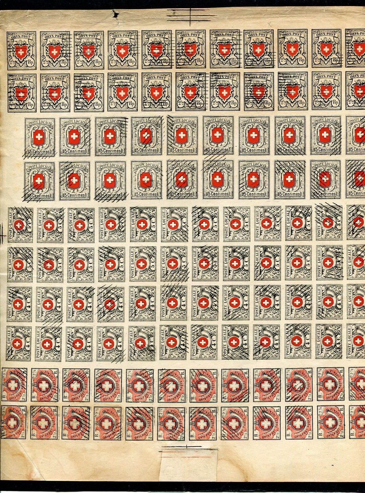

First forgery of Album Weeds
Switzerland Cantonal issues: Basel - Cantonal issues: Geneva - Cantanal issues: Neuchatel - Cantonal issues: Vaud part 1 - Cantonal issues: Vaud part 2 - Cantonal issues: Winterthur - Cantonal issues: Zurich
Note: on my website many of the
pictures can not be seen! They are of course present in the
catalogue;
contact me if you want to purchase the catalogue.
Some of the more common forgeries of the cantonal issues were cancelled with bars and apparently printed on the same sheet:

First forgery of Album Weeds
In the genuine Neuchatel stamp, there is a small '8' above the "L" of "LOCALE". The above stamps don't have this '8'. There is also no black frame in the white cross (the above stamps do have a black frame). An extra frameline exists all around the stamp, which is not present in the genuine stamps. The above forgeries are quite common and are referred to as first forgery in the book Album Weeds. This forgery is very old and was already mentioned in Schweizer Illustr. Briefmarken-Zeitung of May 1883 (source: http://briefmarken.ag/:).

In the above Winterthur forgery there is no dot behind
"ORTSPOST". The arrows and spirals outside the stamp
are missing. There are many other differences with the genuine
stamp.
(Sheet of forgeries, printed together with Vaud issue, reduced
size)

(Extra line below value label and black outline on cross)
I think the above Vaud forgeries are the first forgeries described in Album weeds; there are only 12 turns of the ribbon, there is a black outline on the white cross and on the red circle. A horizontal line can be seen between the value label and the bottom of the stamp (there is no such line in a genuine stamp, see enlarged pictures above for more details).


A rather common forgery of the "ORTS-POST" stamp.